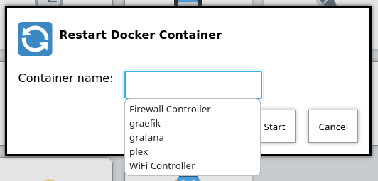
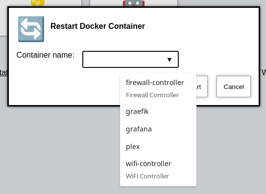

Suggestions
Argument inputs can also have "suggested" values, which can make it quicker to type commonly used options. The way that these are displayed will vary depending on your browser, as they are implemented as a modern HTML5 browser feature called "datalist".
Suggestions are configured like this;
Configuration example of input suggestions
actions:
- title: Restart Docker Container
icon: restart
shell: docker restart {{ container }}
arguments:
- name: container
title: Container name
suggestions:
- plex:
- graefik:
- grafana:
- wifi-controller: WiFi Controller
- firewall-controller: Firewall ControllerIn the examples above, there are 5 suggestions. The first 3 suggestions contain a suggestion with a blank title. The last 2 suggestions contain a human readable title (eg: wifi-controller is the suggestion, and WiFi Controller is the title).
|
Note
|
suggestions: is a yaml map, not a list. If you leave the title empty you must still end the suggestion with a ":".
|
Examples

Figure 4. Screenshot of input suggestions with Firefox on Linux.

Figure 5. Screenshot of input suggestions with Chrome on Linux.
Browser Support
datalist is widely supported now-a-days, but Firefox on Android notably lacks support; https://caniuse.com/datalist . See the upstream bug here; https://bugzilla.mozilla.org/show_bug.cgi?id=1535985 .